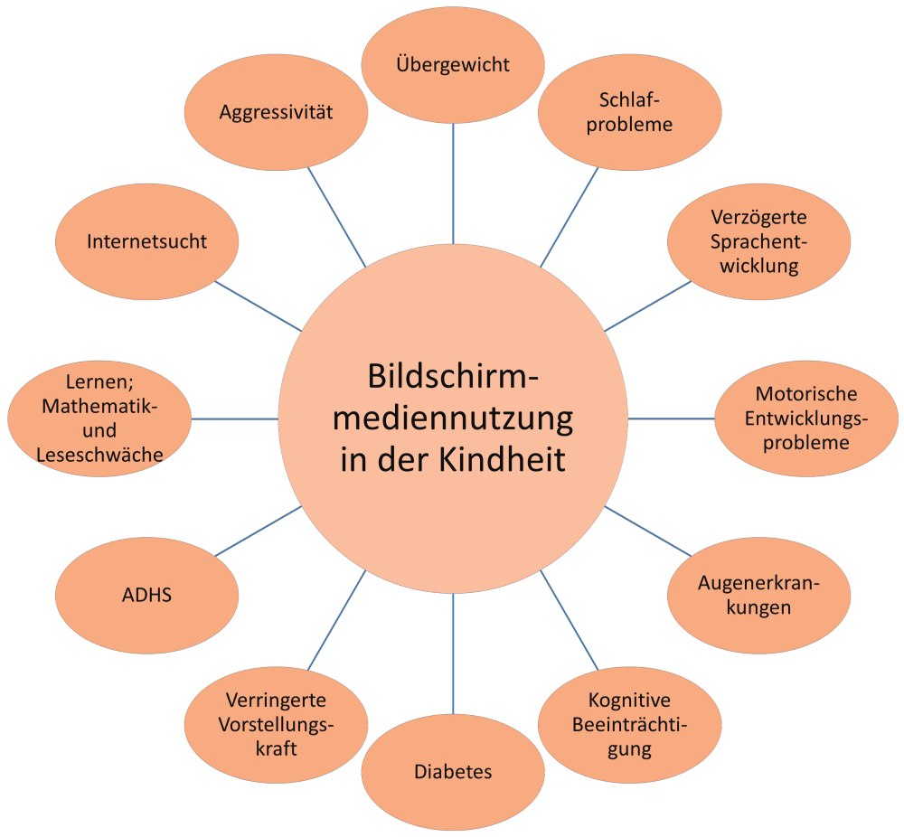

Quellen zu Bildschirmrisiken

Übergewicht (durch Abwesenheit körperlicher Aktivität und einer ungesunden Ernährungsweise)
Peter, C., & Schweizerisches Gesundheitsobservatorium (Hrsg.). (2020). Gesundheit in der Schweiz - Kinder, Jugendliche und junge Erwachsene: nationaler Gesundheitsbericht 2020 (1. Auflage.). Bern: Hogrefe. Abgerufen von https://www.obsan.admin.ch/de/publikationen/2020-gesundheit-der-schweiz-kinder-jugendliche-und-junge-erwachsene
Schlafprobleme, Verzögerte Sprachentwicklung und -probleme, Mathematik- und Leseschwäche, Motorische Entwicklungsprobleme
Li, C., Cheng, G., Sha, T., Cheng, W., & Yan, Y. (2020). The Relationships between Screen Use and Health Indicators among Infants, Toddlers, and Preschoolers: A Meta-Analysis and Systematic Review. International Journal of Environmental Research and Public Health, 17(19), 7324. https://doi.org/10.3390/ijerph17197324
Verringerte Vorstellungskraft
Suggate, S. P., & Martzog, P. (2020). Screen-time influences children’s mental imagery performance. Developmental Science, e12978. https://doi.org/10.1111/desc.12978
Augenerkrankungen
Yang, G.-Y., Huang, L.-H., Schmid, K. L., Li, C.-G., Chen, J.-Y., He, G.-H., … Chen, W.-Q. (2020). Associations Between Screen Exposure in Early Life and Myopia amongst Chinese Preschoolers. International Journal of Environmental Research and Public Health, 17(3), 1056. https://doi.org/10.3390/ijerph17031056
Kognitive Beeinträchtigung
Walsh, J. J., Barnes, J. D., Cameron, J. D., Goldfield, G. S., Chaput, J.-P., Gunnell, K. E., … Tremblay, M. S. (2018). Associations between 24 hour movement behaviours and global cognition in US children: a cross-sectional observational study. The Lancet Child & Adolescent Health, 2(11), 783–791. https://doi.org/10.1016/S2352-4642(18)30278-5
Diabetes
Thorp, A. A., Owen, N., Neuhaus, M., & Dunstan, D. W. (2011). Sedentary Behaviors and Subsequent Health Outcomes in Adults. American Journal of Preventive Medicine, 41(2), 207–215. https://doi.org/10.1016/j.amepre.2011.05.004
Danielsen, Y., Júlíusson, P., Nordhus, I., Kleiven, M., Meltzer, H., Olsson, S., & Pallesen, S. (2011). The relationship between life-style and cardio-metabolic risk indicators in children: the importance of screen time: Physical activity and cardio-metabolic risk indicators. Acta Paediatrica, 100(2), 253–259. https://doi.org/10.1111/j.1651-2227.2010.02098.x
ADHS (Aufmerksamkeitsdefizit-/Hyperaktivitätsstörung)
Beyens, I., Valkenburg, P. M., & Piotrowski, J. T. (2018). Screen media use and ADHD-related behaviors: Four decades of research. Proceedings of the National Academy of Sciences of the United States of America, 115(40), 9875–9881. https://doi.org/10.1073/pnas.1611611114
Internetsucht
Moreno, M. A., Jelenchick, L., Cox, E., Young, H., & Christakis, D. A. (2011). Problematic internet use among US youth: a systematic review. Archives of Pediatrics & Adolescent Medicine, 165(9), 797–805. https://doi.org/10.1001/archpediatrics.2011.58
Aggressivität
Council on Communications and Media. (2016). Media and Young Minds. Pediatrics, 138(5), e20162591. https://doi.org/10.1542/peds.2016-2591
Zurück nach oben